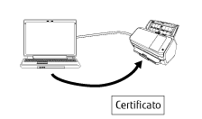

Panoramica
Network Setup Tool for fi Series è un'applicazione usata per collegare uno scanner di immagini fi Series a una rete per renderlo disponibile.
Network Setup Tool for fi Series è fornito con i programmi seguenti.
I modelli di scanner supportati variano a seconda del programma usato per il modello. Controllare prima che il nome del modello di scanner in uso sia uno dei nomi dei modelli di scanner supportati da ogni programma. Per dettagli sui modelli di scanner supportati da ogni programma, consultare Modelli di scanner supportati.
Programma di selezione dello scanner
Questo programma consente di selezionare uno scanner da usare dal computer.
È possibile selezionare uno scanner singolo tra gli scanner collegati a una rete.
Quando si seleziona fi-8950, fi-8930, fi-8820, fi-8040, fi-8190, fi-8290, fi-8170, fi-8270, fi-8150 o fi-8250, è inoltre possibile eseguire le seguenti operazioni.
Avviare le Impostazioni di rete di fi Series (sul browser web) dalla finestra [Programma di selezione dello scanner] per configurare le impostazioni dello scanner
Avviare Software Operation Panel dal computer per configurare le impostazioni dello scanner
Per i dettagli sulle Impostazioni di rete di fi Series (sul browser web) e Software Operation Panel, consultare la Guida dell'operatore dello scanner.

Programma di impostazione dell'indirizzo IP
Questo programma consente di impostare un indirizzo IP, il nome dello scanner, le informazioni correlate alla sicurezza e altre informazioni sulla rete.
Programma di registrazione del certificato
È un programma per registrare un certificato su uno scanner per collegare lo scanner a una rete che richiede un certificato tramite WI-Fi.
Dopo la registrazione di un certificato sullo scanner, configurare le impostazioni Wi-Fi sullo schermo tattile dello scanner.
I certificati che è possibile registrare sono i seguenti:
Certificati client: File in formato PKCS#12 (*.p12, *.pfx)
Certificati CA: File del certificato CA (*.cer, *.crt, *.der, *.pem)

Button Event Manager
È uno strumento per specificare un'applicazione di scansione delle immagini da avviare quando si preme un tasto di scansione sullo scanner.
È necessario usare il Programma di selezione dello scanner per impostare uno scanner collegato a una rete per poterlo usare su un computer.